Mẫu nhà dân mới
Bốn dáng nhà sàn chỉ dùng hai kiểu mái có dẫn chứng thời Văn Lang: mái võng và mái vòm khắc trên trống đồng Ngọc Lũ. Các mẫu khác nhau ở tỉ lệ nhà và ở đồ vật, cảnh sinh hoạt có trên trống đồng hay trong di vật Đông Sơn. Mỗi mẫu ghi rõ chi tiết nào có nguồn, chi tiết nào thêm cho game.
Dẫn chứng về nhà thời Văn Lang
| Chi tiết | Dẫn chứng |
|---|---|
| Nhà ở phổ biến là nhà sàn, làm bằng gỗ, tre, nứa, lá | Sách Lịch sử 6, bài Đời sống cư dân Văn Lang2 |
| Hai kiểu nhà sàn: mái võng (cong lõm) có đôi chim trang trí; mái vòm (cong lồi) có người bên trong, vách hoa văn vòng tròn chấm giữa | Trống đồng Ngọc Lũ, theo mô tả của Bảo tàng Lịch sử Quốc gia1 |
| "Nhà sàn mái cong hình thuyền hoặc mái tròn hình mui thuyền" | Sách Lịch sử 62 |
| Nhà mái tròn có thể là kho thóc | Cách hiểu của nhà nghiên cứu, chưa chắc chắn3 |
| Cảnh giã gạo bằng chày cạnh nhà | Hình khắc trên trống Ngọc Lũ4 |
| Đi lại chủ yếu bằng thuyền; thuyền độc mộc | Sách Lịch sử 62; mộ thuyền Việt Khê (văn hóa Đông Sơn)5 |
| Ngói có trang trí, lò nung ở kinh đô cuối thời kỳ | Khai quật Cổ Loa (Âu Lạc, khoảng 300 TCN)6; game cho mái ngói từ cấp 7 |
Chưa tìm được dẫn chứng cho: nhà nền đất, tường đất, mái bốn dốc, góc mái vểnh, mái thẳng dựng đứng, khau cút. Nên cả bốn mẫu dưới đây đều là nhà sàn mái cong.
Xóm nhà, trước và sau
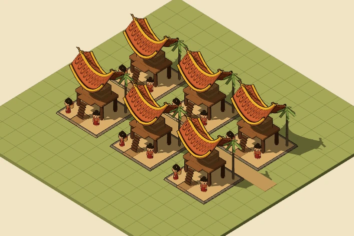
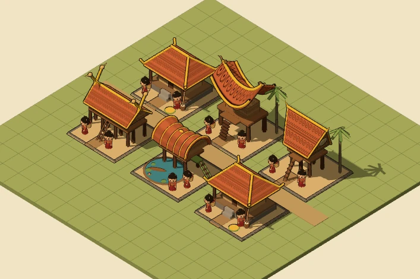
Điện cấp 10 cho dựng 9 nhà sàn; từ cấp 7 nhà nào cũng thành nhà mái thuyền. Ảnh chụp bằng chính bộ vẽ của game, cỡ gần như ở độ phóng mặc định trên điện thoại.
Nhà mui thuyền
Nhà sàn mái vòm dài như mui thuyền, chiếc thuyền độc mộc gác ở sân.
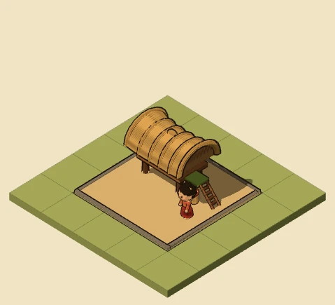
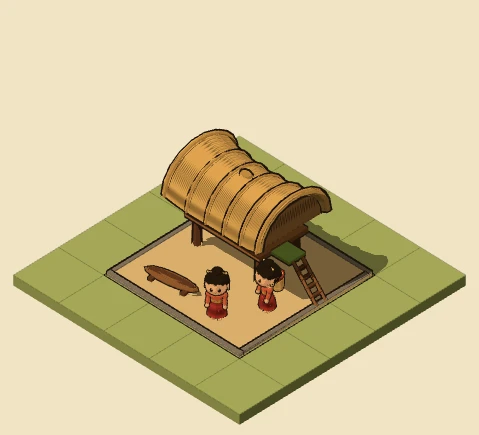
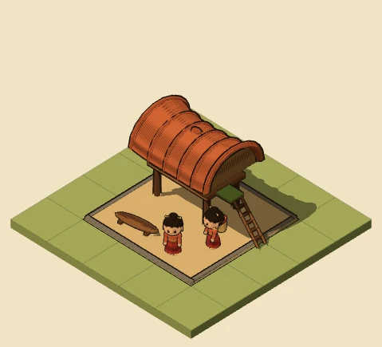
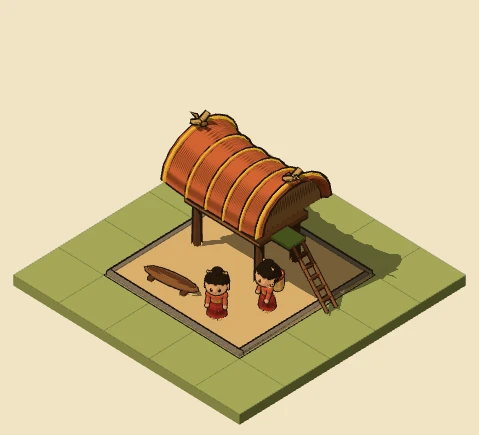
Nhà mái võng đôi chim
Nhà sàn thấp và dài, mái võng trùm sát sàn, hai đầu nóc vút cao, đôi chim đậu giữa nóc quay mặt vào nhau.
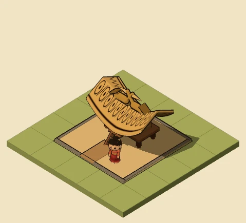
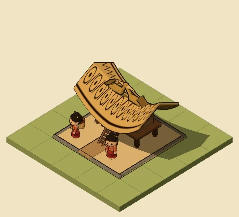
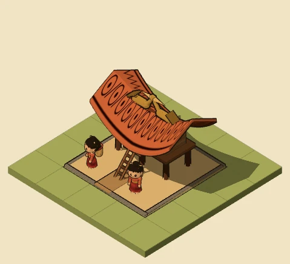
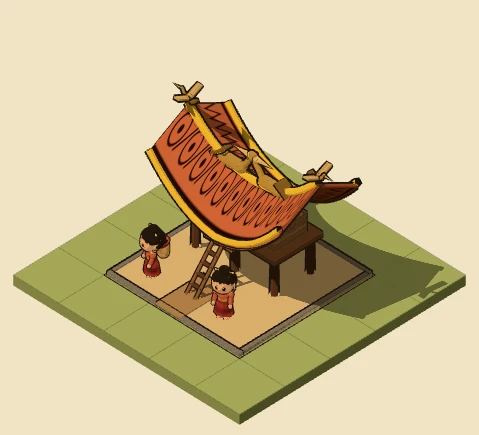
Nhà giã gạo
Nhà sàn mái võng quay đầu hồi ra trước, hai đầu nóc vút như sừng; sân trước có cối và hai chày giã gạo.
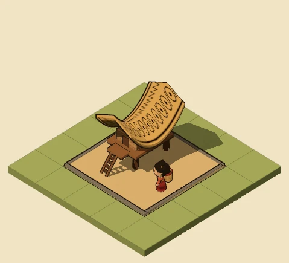
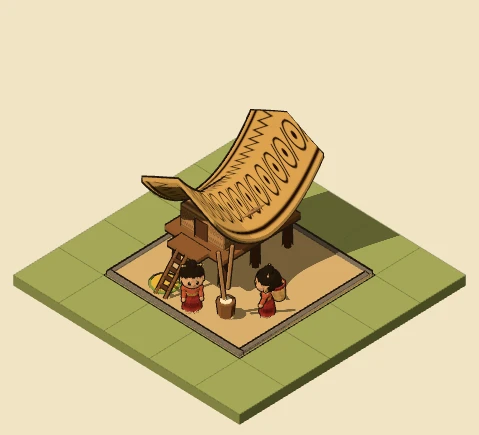
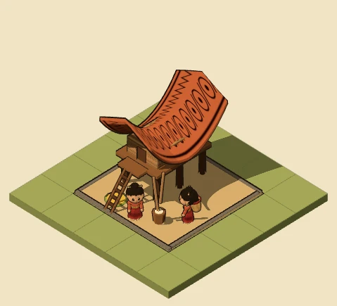
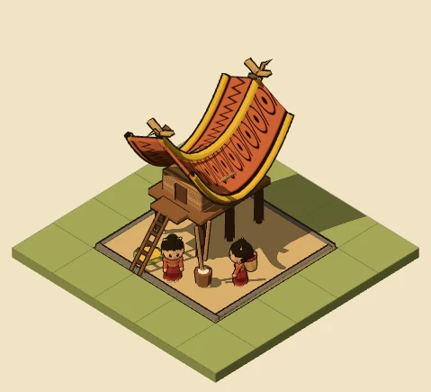
Nhà có vựa thóc
Nhà sàn mái võng vừa phải, góc sau bên phải có vựa thóc nhỏ mái vòm trên bốn cột cao.
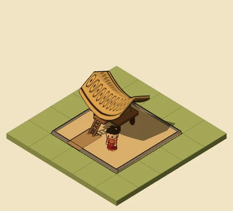
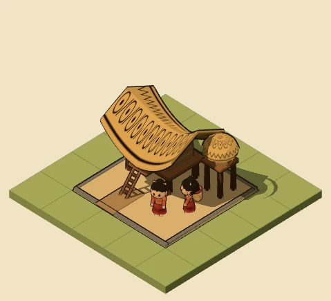
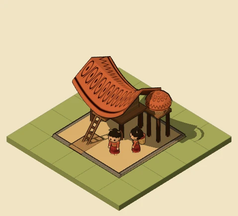
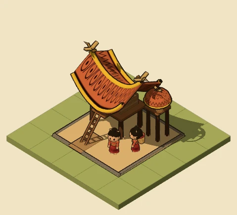
Nhà sàn hiện tại, để so
Mái vòm tới cấp 6, từ cấp 7 thành nhà mái thuyền. Cả hai dáng đều có trên trống đồng; giữ làm kiểu thứ năm.
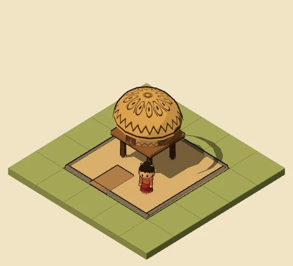
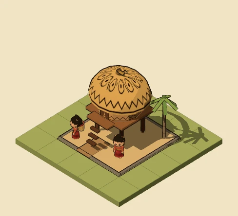


Đã bỏ ở bản này
| Mẫu bản trước | Vì sao bỏ |
|---|---|
| Nhà mái lưỡi rìu | Mái dựng đứng lấy từ nhà mái cao miền núi đời nay; rìu xéo là đồ đồng, không phải kiểu nhà. |
| Nhà nền đất mái chùm | Không có dẫn chứng nhà nền đất, tường đất, mái bốn dốc, góc mái vểnh ở thời Văn Lang. |
| Nhà sàn dài khau cút | Khau cút là của người Thái, vào Tây Bắc khoảng thế kỷ X–XI7, hơn 1.000 năm sau Văn Lang; trống đồng khắc mái cong, không phải mái thẳng. |
Nặng máy không
Mỗi mẫu 6 lưới (3 khối màu, mỗi khối một lớp viền mực) như nhà sàn hiện tại. Số tam giác ngang nhà sàn hiện tại, không tính người.
| Mẫu | Lưới | Tam giác cấp 5 | Tam giác cấp 10 |
|---|---|---|---|
| Nhà sàn hiện tại | 6 | 2.944 | 4.588 |
| Nhà mui thuyền | 6 | 3.856 | 4.216 |
| Nhà mái võng đôi chim | 6 | 3.740 | 5.076 |
| Nhà giã gạo | 6 | 2.580 | 3.940 |
| Nhà có vựa thóc | 6 | 2.736 | 4.744 |
Đưa vào game
- Là các kiểu nhà của nhà sàn, chỉ để nhìn: móng 3×3, giá, số dân, máu, số tối đa giữ nguyên.
- Vòng nút và bảng nhà sàn có nút Đổi kiểu, miễn phí, đổi ngay.
- Bản lưu thêm một trường tùy chọn như hướng xoay (
Building.rot), không lên phiên bản lưu. - Mẫu kinh đô, kinh đô máy Đấu thành, máy chủ không đổi.
Cần chủ dự án chốt
- Giữ, bỏ hay sửa mẫu nào trong bốn mẫu?
- Nhà mới dựng tự trộn kiểu, hay luôn ra nhà sàn hiện tại rồi người chơi tự đổi?
- Có làm thêm động tác giã gạo cho người ở nhà giã gạo không?
Nguồn
- Bảo tàng Lịch sử Quốc gia: Bảo vật quốc gia trống đồng Ngọc Lũ
- Giáo án Lịch sử 6, bài 13: Đời sống vật chất và tinh thần của cư dân Văn Lang (trang tóm tắt sách giáo khoa)
- Smarthistory: Đông Sơn Drums
- Tổng cục Du lịch: The most beautiful Dong Son bronze drum
- Bảo tàng Lịch sử Quốc gia: Bảo vật quốc gia mộ thuyền Việt Khê
- Nam C. Kim (2016), Vietnam's First City, tạp chí Archaeology
- Tạp chí Dân tộc học: nghiên cứu về nguồn gốc người Thái ở Việt Nam
Phiên làm việc không mở được trang gốc; nội dung lấy qua bản tóm tắt của công cụ tìm kiếm. Nên mở các link trên để kiểm lại, nhất là mô tả hai kiểu nhà của Bảo tàng Lịch sử Quốc gia.